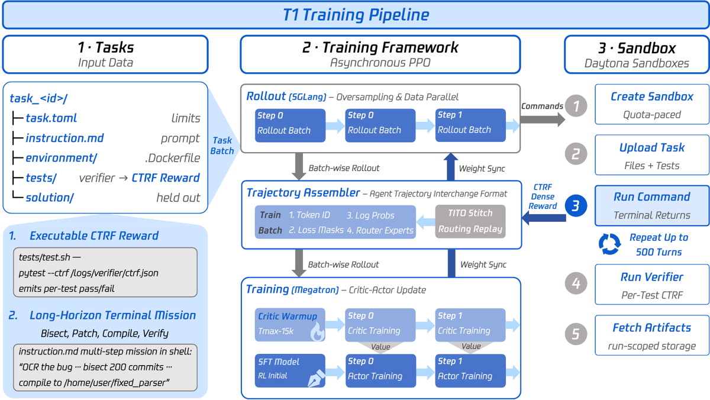
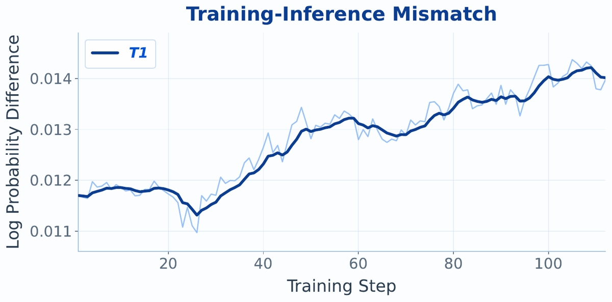
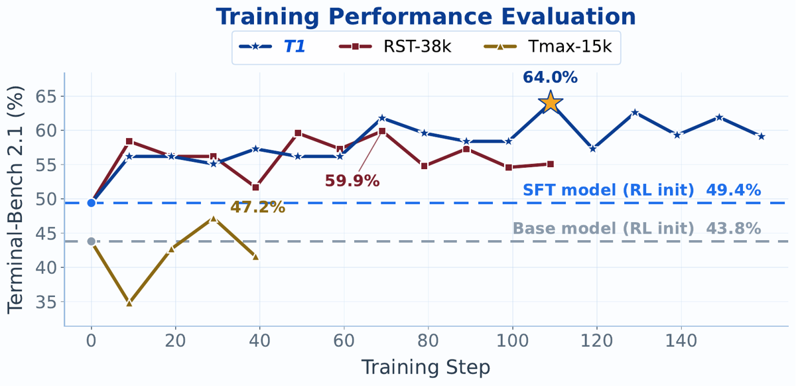

T1: Terminal Agent Reinforcement Learning for Long-Horizon Tasks
url
https://arxiv.org/abs/2609.11042
authors
Junyao Yang, Yucheng Shi, Zhongzhi Li, et al.
groupe
Tencent Hy Foundation Model Frontier (+ NUS, U. Georgia, Indiana, UMD) — auteur correspondant Junyao Yang ; senior Tencent : Haitao Mi, Leowei Liang
gdm_authors
aucun
date
2026-09-10
venue
preprint (37 pages, 18 figures ; pas de journal_ref)
categorie
ENV
base_model
Qwen3.5-122B-A10B (MoE 121,4B total / 10B actifs ; 116,0B params experts, 5,86B dense ; L=48, top-k=8 sur E=256) ; init RL depuis un checkpoint SFT « RST-SFT »
domaine_env
terminal / shell Linux (code, sysadmin, build, VCS) en sandbox cloud
env_publie
non (page projet `jyyang26.github.io/t1` + collection HuggingFace annoncées en en-tête ; ni code, ni pool de tâches, ni harness vérifiables depuis le papier)
TL;DR — recette complète de RL agentique long-horizon sur shell réel : PPO actor-critic à 122B MoE, sandbox Daytona par essai, reward dense = nombre absolu d'assertions passées par le vérifieur de la tâche, et une pile d'alignement train/inférence (TITO sur les tokens, R³ sur le routage MoE) qui est le vrai contenu du papier.
Claim principal, formulé : sur Terminal-Bench 2.1 sous harness Harbor/Terminus-2, trois « époques » de PPO sur un pool synthétique de 15 000 tâches disjoint du benchmark font passer le pipeline de post-training de 43,8 % (base) à 64,0 % resolved, dont +14,6 pts imputables au seul RL au-dessus du checkpoint SFT (49,4 %) ; conjointement, TITO + R³ ramènent l'écart moyen de log-probabilité train↔inférence de 0,021 à 0,013 avec 0,0000 % de dérive de tokens dans la région de loss [§4.2, §6.2].
⚠️ Le papier est un journal d'ingénierie de grande valeur (y compris ce qui a cassé) adossé à des preuves faibles : aucune ablation à axe unique, aucune seed, et le 64,0 % est le pic d'une série d'évaluations bruitée sur le benchmark de report lui-même.
1. Tâches & data
Origine : entièrement synthétique, générée par modèle via RST (travail antérieur de l'équipe, cité) ; aucune tâche humaine ni minée. Aucun coût d'annotation humaine rapporté (audit fait par DeepSeek-V4-Pro) [§3.2, §5.4].
Structure d'une tâche (auto-contenue, layout terminal-bench) : task.toml (limites de ressources), instruction.md (prompt long-horizon), environment/ (Dockerfile → conteneur isolé), tests/ (vérifieur held-out), solution/ (solution de référence jamais vue par l'agent) [§2.1, Fig. pipeline].
Pipeline de construction (RST, récursif) : tâches acceptées du round précédent = graines, sous caps de lignage parent / catégorie / famille de réécriture → sélection d'un opérateur de réécriture faisable → extension de la solution de référence par des étapes exécutables supplémentaires → réalignement de l'environnement, du vérifieur et de l'instruction publique sur ce workflow allongé → validation en sandbox neuf où la solution de référence doit réellement passer le vérifieur held-out, réparation bornée sinon rejet. Point de design explicite : la difficulté est ajoutée au chemin exécutable avant la réécriture de l'instruction, pour que l'horizon s'allonge sans dégénérer en « prompt plus long sur le même comportement » [§3.2].
Trois pools [§3.1] :
| Pool | Volume | Vérifieur | Usage |
|---|---|---|---|
| Tmax-15k | 14 601 tâches converties d'un corpus public | binaire seulement, pas de report par assertion | campagne binaire + Critic Warm-Up |
| RST-38k | 37 484 tâches synthétisées (RST, non filtrées) | par assertion | campagne dense « non filtrée » |
| T1-15k | 15 000 tâches sélectionnées | par assertion ; pré-vol confirme le report dans 93 % des tâches échantillonnées | run de production |
Filtrage : audit LLM à 8 dimensions pondérées (somme 1,00) [Fig. audit] : Verifier Alignment 20 %, Verifier Fairness 15 %, Solution Correctness 15 %, Instruction Clarity 10 %, Instruction Self-Contained 10 %, Verifier Coverage 10 %, Solution Reasonableness 10 %, Task Training Value 10 % ; par facette Vérifieur 45 % / Solution 25 % / Instruction 20 % / Valeur 10 %. hard_reject sur quatre motifs : exigences cachées, fuite de tests, raccourcis de solution, vérifieur trop faible pour valider son propre but. Toutes les dimensions sauf « task training value » ont un minimum critique [§3.2, §5.4]. Aucun filtrage par pass@k du modèle de base — absent du papier.
Chaîne de sélection, 5 étapes sur 15 rounds de réécriture : agrégation avec lignage → pré-check statique + validation exécutable → passe sémantique donnant 5 902 acceptées / 3 251 borderline / 5 847 rejetées → réparation instruction-only de 6 875 tâches → ré-audit [§3.2]. ⚠️ 5 902+3 251+5 847 = 15 000 exactement : le « T1-15k » décrit comme « 15 000 tâches sélectionnées » coïncide numériquement avec l'ensemble audité, pas avec l'ensemble accepté. Le papier ne réconcilie pas les deux.
Distribution de difficulté : non précisée en tant que telle ; proxy = nombre d'assertions par tâche, médiane 4, maximum ≈ 35, 90e percentile ≈ 20 [§5.2]. Composition : 17 catégories fusionnées depuis 47 labels bruts ; scripting/automation 17,9 %, software development 16,5 %, system administration 13,8 %, env/package setup 10,4 %, version control 9,3 % (top-5 = 67,9 %) ; queues fines : data science 3,7 %, debugging 1,3 %, performance 1,0 % [§3.1].
Curriculum : aucun curriculum easy→hard, revendiqué comme choix de design ; mélange de difficultés dans un même batch, avec permutation seedée par époque obligatoire parce que le pool est matérialisé en ordre de rang de qualité — sans shuffle, un curseur séquentiel balaierait du meilleur au pire et ferait dériver monotonement la distribution de reward vue par le critic [§3.1, §5.4]. Le shuffling est traité comme partie du design du reward, pas comme une commodité.
Contamination / séparation train-test : les trois suites d'éval ne fournissent aucune tâche à aucun pool d'entraînement, et le corpus est annoncé « fully out-of-distribution » (graines isolées, tâches synthétisées disjointes de TB 2.1) [§1, §6.1]. ⚠️ Aucun audit de contamination (ni n-gram, ni dédup, ni recoupement de catégories) n'est rapporté : l'OOD est une propriété de construction affirmée, pas mesurée.
SFT/IFT avant RL : checkpoint « RST-SFT » à 49,4 % TB 2.1, produit par du rejection-sampling-style fine-tuning explicitement hors scope — source, volume et recette non précisés [§6.1]. C'est un trou important : l'init du run de production n'est pas documentée.
Coût humain : non précisé (aucune heure d'expert mentionnée ; l'audit est automatisé).
Observation : boucle de tool-call structurée — chaque tour assistant émet des commandes shell, chaque tour outil renvoie la sortie terminal brute. Thinking explicite désactivé dans le chat template. Compaction proactive du contexte activée : l'agent résume sa propre histoire une fois un seuil configuré atteint (valeur du seuil non précisée) [§6.1].
Espace d'actions / outils : shell réel, commandes arbitraires. ⚠️ La liste et les signatures des outils ne sont pas données — non précisé. Le seul détail concret est l'arborescence de tâche et le script de vérification (tests/test.sh → pytest --ctrf /logs/verifier/ctrf.json) visible sur la figure du pipeline.
Multi-turn / horizon : multi-turn, et c'est là que le papier se contredit (voir §7.0) :
éval § : « at most 60 turns » sous mur agent 3 600 s et mur vérifieur 900 s [§6.1] ;
figure du pipeline (côté sandbox d'entraînement) : « Repeat Up to 500 Turns » ;
étude de cas : plafond d'évaluation de 500 tours, T1 passe 164 à 473 tours sur six tâches non résolues, 94,4 tours en moyenne à l'évaluation [§6.4] ; App. C donne les limites T1 = 86k/32 768 tokens et 500 tours contre SFT 56k/8 192 et 100 tours.
en entraînement, l'horizon réellement observé est bien plus court : 10,4 → ≈20,7 tours par trajectoire, longueur totale 11,5k → ≈18,3k tokens [§6.3].
Donc le « 300+ tool-call turns per task » de l'abstract est un plafond atteint par des trajectoires en échec, pas le régime d'entraînement.
Contexte long : fenêtre de décodage 96 000 tokens à l'éval [§6.1] ; 84k de longueur de contexte au training de production [§6.2] ; 56k d'entrée / 8 192 de sortie annoncés comme « nos » limites dans l'étude de cas [§6.4] ; 86k/32 768 dans App. C. Gestion = compaction/résumé par l'agent lui-même, plus des placeholders du harness quand le contexte déborde (cf. §5).
Exécution : sandbox cloud neuf par essai, 10 GiB de disque, détruit à la complétion ; provisionnement minimal (1 cœur, peu de mémoire/disque) parce que c'est la concurrence, pas la capacité par instance, qui fixe le batch atteignable [§6.1, §7.4]. Deadlines en couches : 5 400 s remote / 3 600 s agent / 900 s vérifieur ; timeout total d'évaluation 18 000 s. Reclamation explicite : la suppression différée qui ne se déclenche qu'après suspension fuite des instances jusqu'à épuisement du quota [§7.4]. Déterminisme : non précisé (décodage à température 0,1, top-p 0,95, top-k 20, 3 tentatives par tâche à l'éval).
Gestion des erreurs : côté reward, fallback sur l'outcome binaire si le report par assertion est manquant ou non parsable, avec tagging des causes d'échec de parsing pour l'observabilité [§5.2]. Côté routage, l'absence de capture est une erreur dure : le rollout avorte plutôt que de droper l'échantillon, « ce qui conditionnerait le batch au succès de la capture » [§4.3] — raisonnement de sélection-biais exemplaire. Sorties mal formées de l'agent : non précisé.
Exemple de trajectoire : pas de trace recopiée ; deux études de cas comparatives en App. C (voir §5).
3. Reward / vérifieur
Type : exécution de tests, par assertion. Le vérifieur de chaque tâche est invoqué de sorte à émettre un rapport structuré par assertion dans le sandbox (format CTRF : pytest --ctrf /logs/verifier/ctrf.json, visible sur la figure du pipeline) ; l'étage de reward relit ce rapport après le rollout [§5.2]. Pas de LLM-as-judge, pas de reward model — le juge LLM n'intervient qu'en amont, à l'audit du pool.
Définition : r = P / S avec P = nombre d'assertions passées et S = 20 fixe globalement, explicitement pas le taux de réussite [§5.2, éq. reward]. r peut dépasser 1 (max ≈ 35 assertions).
Granularité : outcome, pas process, malgré le nom « dense process reward ». Le papier le dit lui-même : la densité porte sur la résolution en valeur, pas sur le placement temporel — un unique scalaire est posé sur le dernier token de réponse de chaque chunk de trajectoire, et GAE à γ=λ=1 remonte le crédit [§5.3]. Crédit partiel : oui, par pas de 1/20.
Pourquoi le compte absolu et non le ratio [§5.2] : le batch mélange les difficultés sans curriculum ; 10/20 sur une tâche dure et 2/4 sur une tâche facile donnent le même ratio 0,5 alors que le travail vérifié diffère. La synthèse a été conçue pour que les tâches dures portent plus d'assertions, chaque assertion représentant « un incrément de travail à peu près comparable » — les auteurs qualifient cela de principe de design approximatif, pas d'une garantie. Sous S=20 les deux trajectoires reçoivent 0,5 et 0,1.
Pourquoi S fixe : une normalisation par max de batch ferait dériver l'échelle de reward d'un step à l'autre et donnerait au critic une cible de régression incohérente ; la cohérence inter-steps est ce qui rend la value function apprenable [§5.2]. Effet anti-hacking collatéral : un échantillon extrême ne peut plus changer le dénominateur de tout le batch [§5.4].
Termes additionnels : aucun. Pas de bonus de format, pas de pénalité de longueur dans le run 122B, pas de shaping potentiel, pas de terme par tour [§5.3, §5.4]. Les deux KL sont désactivés [§4.4].
Variantes abandonnées : (a) ratio clampé r = max(b, 0,4·P/T) sur [0, max(1,b)], « conservée pour comparaison contrôlée » — aucun chiffre de comparaison n'est rapporté ; (b) pénalité de longueur additive, qui a produit une croissance non bornée au-delà de 50 tours [§5.2, §6.3]. Une troisième variante (Length-Adaptive GAE) n'existe que comme macro LaTeX non utilisée et est listée comme « reporting gap » [§10].
Fiabilité du vérifieur : non mesurée. Pas de taux de faux positifs/négatifs, pas d'accord humain. Les seuls chiffres proches : 93 % des tâches échantillonnées émettent bien un report par assertion [§3.1], et l'audit rejette les vérifieurs « trop faibles pour valider le but » sans quantifier le résidu.
Robustesse / attaque : le papier reconnaît le point dur — « verifier integrity is filtered, not enforced » : le vérifieur s'exécute dans le sandbox contrôlé par l'agent, sans détection de falsification à l'exécution ; la défense repose entièrement sur l'audit du pool. Montages de tests en lecture seule et vérifieurs checksummés sont annoncés comme « straightforward next steps » non implémentés [§10]. ⚠️ Pour un reward qui compte des assertions dans un conteneur où l'agent est root, c'est le trou le plus sérieux de la recette.
4. Optimisation
Algorithme : PPO avec critic séparé de taille complète (copie de l'architecture, tête LM remplacée par une tête de valeur scalaire sur le dernier étage de pipeline), sur le framework slime v0.3.0 ; boucle asynchrone à un pas (génération du step t+1 pendant l'update t), staleness σ = 1 constante, pas variable aléatoire, garantie par une barrière de publication qui met la génération au repos avant publication des poids [§2.2, §4.5, §7.5, App. B].
Hyperparamètres [§4.4, §4.5, §6.2, App. A] :
| Item | Valeur |
|---|---|
| Clip acteur ε | 0,2 (symétrique) |
| Clip valeur ε_v | 0,2, ancré sur V_{φ_{t-1}} |
| KL (policy et référence) | désactivés tous les deux |
| Coef. load-balancing MoE | 0 |
| γ, λ (GAE) | 1,0 / 1,0 |
| Optimiseur | Adam β=(0,9 ; 0,98), weight decay 0,1, LR constant |
| LR acteur / critic | 1,0e-6 / 1,5e-5 (App. A : η_θ = 2η_canon, η_φ = 30η_canon, η_canon = 5e-7) |
| Batch | 560 lancés → 512 admis (oversampling, queue tronquée) |
| Data parallel δ | 2 (texte §4.4 mentionne « data parallel at 8 ») |
| Contexte d'entraînement | 84k tokens |
| Steps | ≈110 au pic ; courbes tracées jusqu'à ≈160 |
| Normalisation d'advantage | aucune (1 échantillon par tâche → pas de statistique de groupe ; normaliser effacerait les différences inter-tâches que le compte absolu existe pour préserver) |
| Température de sampling (rollout) | non précisée (0,1 est la valeur d'évaluation) |
Raisons des désactivations — c'est le point le plus instructif : les deux KL sont coupés parce que la référence figée route avec son propre TopK et « facturerait injustement à la policy une différence de bookkeeping » ; le load-balancing est coupé parce que « la pression d'équilibrage demande au routeur de redistribuer exactement les choix que le replay lui demande de reproduire » [§4.4]. Corollaire assumé : KL(π₀‖π_ref) > 0 par construction au step 0 bien que θ₀ = θ_ref, donc toute assertion de divergence initiale nulle doit être désactivée sous R³ [§4.3, App. B].
Alignement train/inférence — le cœur du papier. Le gap mesuré se décompose en (a) version skew (un step d'optimisation, légitime, borné par le clip) + (b) implementation gap (mêmes poids θ_{t-1} en désaccord avec eux-mêmes à travers deux implémentations) = token drift + routing divergence + numérique de kernel (irréductible) [App. B]. Deux conditions de fidélité indépendantes :
TITO (token fidelity) : le trainer consomme les identifiants que le sampler a émis. Le harness casse la condition de trois façons : l'encodage est canonique alors que le décodage est many-to-one (un split non canonique est perdu à la ré-encodage) ; les templates élaguent le reasoning avant le dernier message User, que le harness émet à chaque observation ; un tool call ré-sérialisé revient avec d'autres espaces donc d'autres identifiants [§4.2]. Hiérarchie de réparation aux frontières de tour, premier cas admissible qui gagne : strict (préfixe bit-exact) → normalized (réparation bornée sur une grille finie 97×17, le 96 étant le suffixe de template partagé) → retokenized (égalité en espace texte ; la copie ré-tokenisée ᾶ_i n'entre jamais dans le flux d'entraînement) → split (nouveau chunk sous le même essai). Audit sur 1 402 échantillons d'un run de production : dérive dans la région de loss = 0,0000 %.
R³ (routing fidelity) : la sélection d'experts du sampler est enregistrée puis rejouée au forward d'entraînement ; la normalisation reste sur les logits vivants, renormalisée sur les seuls experts enregistrés, ce qui garde le routeur entraînable (le gradient passe par la porte g, le TopK discret sort du graphe). Coût : tenseur entier [ρ × L × k], 1 536 B/token (1,5 KiB/position, ≈48 MiB pour une trajectoire de 33k tokens), < 3 % d'overhead de rollout — les masques sont un sous-produit d'un forward déjà calculé. Les masques sont cachés à côté du KV-cache et réutilisés sur hit de préfixe, sinon re-préfiller pour régénérer les masques dominerait une longue trajectoire. Substitution de voisin autorisée uniquement là où m_{j+1}=0, bornée à 0,003 % des positions et disjointe de la région de loss ; sinon erreur dure. Assertions : ρ = N−1 par échantillon, sharding identique à celui des tokens (Π = Π_SP ∘ pad_TP×ν ∘ Π_CP ∘ pad_1), curseurs forward et backward séparés parce que la recomputation d'activations rejoue le forward pendant le backward [§4.3, App. B].
⚠️ TITO et R³ sont tous deux des méthodes citées (\citep{tito}, \citep{r3}) [§8] : la contribution de T1 est le chemin de capture, l'alignement multi-turn et la politique d'échec, pas les mécanismes eux-mêmes.
Résultat de l'alignement : |Δ log p| moyen 0,021 → 0,013 (même stack 122B, avec vs sans les deux mécanismes) [Fig. logprob gap]. ⚠️ La courbe du run de production part de ≈0,0117 et monte à ≈0,0140 en fin de run, au-dessus du 0,013 annoncé ; les auteurs anticipent l'objection (le terme (a) croît quand la policy s'améliore légitimement, le terme (b) reste plat) mais ne décomposent jamais empiriquement (a) et (b) — la décomposition reste analytique.
Critic Warm-Up : le critic est entraîné (acteur entraîné aussi, seul le critic est sauvegardé) pendant une époque sur Tmax-15k avant tout step de policy ; la campagne dense charge les poids seuls, aucun moment d'optimiseur ne traverse les runs, et N=2 rollouts de recalibration suffisent [§4.5].
Ordonnancement : le critic s'entraîne d'abord chaque step et passe ses valeurs pré-update V_old = V_{φ_{t-1}} à l'acteur, ancrant à la fois l'estimateur d'advantage et l'objectif de valeur sur une fonction fixe — à la fois pour la correction (le clip reste une région de confiance autour d'une fonction fixe) et parce que les deux réseaux de 122B multiplexent les mêmes devices [§4.5, App. B].
Conditionnement de la cible de valeur : échelle globale fixe + reward sur le token final avec γ=λ=1 → retours par token constants par morceaux, donc le problème de valeur se réduit à « prédire le score final d'une trajectoire depuis son préfixe » [§4.5].
Stabilité — ce qui a cassé et comment c'est réparé :
Tempêtes de compilation : « indiscernables d'un hang de collective », un rang a compilé plus de 30 minutes pendant que ses pairs attendaient dans l'all-to-all [§4.4].
Sélection d'algorithme de kernel en séquence longue : doit être épinglée, la librairie bascule silencieusement d'implémentation sous les heuristiques inference-mode, « découplant la numérique du trainer de celle du sampler et réintroduisant exactement le gap que §4 existe pour fermer » [§7.2].
Réduction de la métrique de mismatch : normaliser par nombre de micro-batches au lieu de Σ m_j gonfle la statistique de trois ordres de grandeur à micro-batch unitaire ; la métrique est calculée hors du chemin autograd pour que la recette soit bit-identique qu'on la collecte ou non [§4.4].
EV calculée par rang : les deux variances doivent être réduites globalement à travers les rangs context- et data-parallel, une valeur par rang moyennée est biaisée [§4.5].
Pourquoi PPO et pas GRPO [§9.4] — argumentaire le plus utile du papier : GRPO entraîné sur T1-15k sous le même harness, le même reward et le même budget devices donne un reward de rollout sans tendance et une éval held-out identique aux deux checkpoints scorés, 51,7 % aux steps 10 et 20, soit les mêmes 46/89 tâches. Trois raisons spécifiques au long-horizon : (i) l'advantage dégénère exactement là où le signal est requis (groupes tout-échec ou tout-succès = cas courant sur les tâches dures) et un advantage unique partagé par tous les tokens supprime le crédit temporel que GAE fournit ; (ii) taille de groupe et diversité de tâches se disputent le budget — à capacité fixe, le nombre de tâches distinctes par step chute d'un facteur G ; (iii) le coût se paie à la queue : un groupe ne ferme qu'au terme de son membre le plus lent, et la troncature qui borne le step time ne peut pas s'appliquer dans un groupe sans détruire la comparaison qui le justifie.
Compute : ⚠️ non précisé — ni GPU-heures, ni nombre de devices G, ni type d'accélérateur. On n'a que : un step ≈ 57 min (≈16 min de génération cachés sous ≈41 min de compute d'entraînement à δ=2), ≈95 GiB de budget mémoire par device, « environ la moitié du budget devices sur l'inférence », et une portabilité annoncée « sur des budgets devices allant du simple à plus du double » [§7.1, §7.5]. À ≈57 min/step × ≈160 steps ≈ 6 jours de run, ordre de grandeur cohérent avec « keeping a co-resident 122B actor–critic pair alive for days ».
Dynamique : reward moyen 0,250 → ≈0,345 sur les 50 premiers steps puis plateau 0,34–0,36 pendant 60 steps, pic 0,365 vers le step 58 ; oscillation haute fréquence d'amplitude ≈0,02 constante, interprétée comme la signature de composition de batch du shuffling à 512 avec un échantillon par tâche et non comme une instabilité. Lecture des auteurs : le plateau n'est pas une stagnation puisque le held-out continue de progresser — « le run redistribue quelles assertions il satisfait plutôt que d'en satisfaire davantage » [§5.2]. Entropie : non rapportée.
5. Failure modes & reward hacking
Le papier consacre une section entière (« Lessons learned and what did not work ») aux échecs — c'est sa principale valeur.
Croissance non bornée des tours sous reward de comptage de tests → comportement : le reward au nombre d'assertions incite à prolonger la trajectoire pour passer plus de tests ; observé sur les runs 27B, croissance au-delà de 50 tours sous pénalité de longueur additive → détection : monitoring des turn counts et longueurs de séquence → correction : sur le 122B, reward de comptage nu, length shaping désactivé ; les tours doublent (10,4 → ≈20,7) puis plafonnent après le step 60, concurremment avec les gains de reward et de benchmark, ce que les auteurs lisent comme « des tours supplémentaires qui produisent des assertions supplémentaires, pas du padding » [§5.4, §6.3]. ⚠️ Argument indirect : aucune inspection de trajectoires n'est rapportée pour l'étayer.
Calibration du critic ≠ amélioration de la policy → comportement : sur les runs 27B, augmenter le LR du critic avance la première EV positive du step 50 au step 30, le reward de rollout reste plat → diagnostic : « le critic apprend à prédire le retour que la reward function assigne ; quand les tâches dures reçoivent toutes le même zéro, mieux le prédire ne peut pas révéler un progrès partiel que le vérifieur ne récompense jamais » → correction : c'est ce qui a réorienté l'effort du tuning d'optimiseur vers la granularité du vérifieur, donc vers le reward dense. Leçon explicite : diagnostiquer séparément EV (value function) et reward/held-out (policy) [§9.1].
La compaction de contexte comme failure mode silencieux → comportement : dans une campagne, un décalage entre budget de contexte et longueur de résumé demandée a fait échouer 98,3 % des tentatives de résumé complet ; le fallback ne retenait qu'un court fragment d'historique ; les agents refaisaient du travail déjà fait, les tours moyens sont passés de 22 à 30, davantage de trajectoires ont atteint leur limite de temps → détection : le run continuait de produire des trajectoires et des rewards — rien ne cassait → correction : non détaillée, mais la leçon l'est : « la croissance des tours seule est un diagnostic ambigu » (travail utile vs répétition induite par le reward vs perte de contexte), et appliquer une pénalité de longueur à de telles trajectoires laisserait l'échec mémoire non résolu [§9.2]. Cas concret en App. C : le modèle SFT accumule 51 débordements de contexte et 50 tours sur 100 remplacés par des placeholders du harness sur build-pov-ray.
L'oversampling biaise la distribution d'entraînement → comportement : pour borner la latence du batch, le scheduler lance plus d'essais que nécessaire, accepte le premier batch complet, annule la queue. Sur un step mesuré, 48 essais sur 561 ont été annulés alors même que le batch accepté était plein → détection : « un compteur de batch complété dissimulait la perte de ces opportunités d'entraînement » → correction : aucune pour l'instant ; l'oversampling est conservé pour son bénéfice wall-clock, l'effet sur la couverture des tâches longues est déclaré trade-off ouvert. Point clé : la queue annulée n'est pas un échantillon uniforme, elle concentre les familles de tâches les plus dures, et « un reward plus riche ne peut pas récupérer de supervision depuis une trajectoire annulée » [§7.4, §9.3, §10].
Mauvaise attribution silencieuse du gradient (le failure mode que TITO/R³ existent pour prévenir) → comportement : une différence numérique « très en dessous de toute tolérance qu'on placerait sur un logit » échange un expert sélectionné contre son dauphin, de sorte que le ratio PPO compare deux réseaux différents plutôt que deux versions d'un réseau ; côté tokens, le round-trip enc∘dec du harness fait conditionner le trainer sur un flux que le sampler n'a jamais produit → détection : la seule sonde est |Δ log p| plus l'auditeur de dérive ; les auteurs insistent qu'« une violation entraîne silencieusement le mauvais sous-réseau », d'où des assertions plutôt que des hypothèses → correction : §4.2/§4.3, abort sur capture manquante, assert ρ=N−1, sharding identique [§4.1, App. B].
Échecs résiduels à l'évaluation : recherche inefficace → six tâches non résolues où T1 dépense 164 à 473 tours contre 6–40 pour GPT-5.6 Sol et expire ; trois échecs supplémentaires sur erreurs de sandbox ; seulement 4 échecs atteignent le plafond de 500 tours, 11 enregistrent des sous-tests partiellement passés. Conclusion des auteurs : « l'interaction longue n'est utile que couplée à un diagnostic, une récupération et une décision d'arrêt efficaces ; augmenter le seul budget de tours ne traiterait pas ces modes d'échec » [§6.4]. ⚠️ Comportement émergent à double tranchant : le RL a appris à persévérer (94,4 tours contre 31,5 pour le SFT) sans apprendre à abandonner.
Comportements émergents positifs (App. C, deux cas où T1 résout et le SFT échoue) : (a) build-pov-ray — abandonner une stratégie morte : les deux modèles diagnostiquent que l'hôte de téléchargement canonique ne sert plus l'archive, le SFT continue de réessayer l'hôte mort (chaque retry ajoutant une page d'erreur HTML), T1 bascule sur un miroir FTP vivant et passe les trois assertions en 65 tours sans débordement — nombres de commandes (86 vs 92) et taux de répétition (7,0 % vs 6,5 %) comparables, « ce qui diffère est où la recherche est allée, pas combien il y en a eu » ; (b) polyglot-c-py — satisfaire l'exigence non énoncée : le vérifieur exige que /app/polyglot contienne exactementmain.py.c ; le SFT compile le binaire de test comme l'exemple du prompt l'y invite et le laisse sur place (score 0,0), T1 le supprime après test (1,0). Tout l'écart 1,0 vs 0,0 tient à une commande de nettoyage. Lecture : le RL change ce que la policy fait d'une conclusion qu'elle sait déjà atteindre — écarter une hypothèse épuisée, et traiter l'état final de la machine comme faisant partie du livrable.
Hacking du vérifieur lui-même : jamais observé ni testé. ⚠️ Crédible ? Non : le vérifieur tourne dans le sandbox contrôlé par l'agent sans détection de falsification [§10], le reward est un comptage d'assertions, et aucune sonde (diff de fichiers de test, checksum, re-exécution hors sandbox) n'est en place. L'absence d'observation reflète ici l'absence d'instrumentation, pas l'absence de phénomène.
6. Infra & coût
Topologie : pools d'accélérateurs disjoints pour training et inference, pipelinés d'un step, step time = max et non somme → l'allocation devient une optimisation : T_step(n) = max(R/n, C/(G−n)), optimum à l'égalité [§7.5].
Débit mesuré : dans une configuration antérieure, passer de 1 à 3 réplicas d'inférence fait tomber la génération de 58,9 à 19,6 min (débit par réplica 4,35 groupes/min), réduisant un step de ≈60 min à ≈23 min — facteur 2,6 sans matériel supplémentaire, par pur rééquilibrage de n. Plan de production : ≈16 min de génération cachés sous ≈41 min de training, step ≈57 min, environ la moitié du budget devices sur l'inférence. Les termes sont délibérément inégaux : le slack de génération absorbe la queue de stragglers sans l'exposer dans T_step [§7.5].
Concurrence d'environnements : workers auxiliaires par nœud épinglés sur la partition d'inférence, cap de concurrence 35 à batch 256, 70–94 à batch 512, pour garder le trafic d'essais hors du coordinateur ; création cadencée par un token bucket à 6 s⁻¹ contre un quota fournisseur de 600 min⁻¹ [§7.4].
Queue de stragglers : oversampling 560 → 512 admis. Coût résiduel structurel : une fois qu'il ne reste qu'une poignée d'essais, aucune décision d'admission n'est possible avant qu'un essai ne termine, et les trajectoires proches de la deadline sont exactement celles qui pataugent dans la compaction de contexte à débit de décodage dégradé ; un épisode a passé 17 minutes à 596 trajectoires collectées pour 512 groupes requis [§7.4]. ⚠️ 596 > 560 lancés : incohérent avec le facteur d'oversampling annoncé (et §9.3 parle de 561 soumis).
Mémoire — le goulot réel : les deux réseaux de 122B multiplexent les mêmes devices par offload forcé, donc chacun doit tenir seul dans 95 GiB. Le premier update conjoint a avorté dans le forward récurrent du critic en demandant « bien moins de 1 % de M » sur un device déjà au-dessus de 95 % de son budget, après que des steps critic-only soient passés proprement. Réponse : un modèle de capacité en forme close b(Π,T) ≤ M (poids+gradients, état d'optimiseur, activations, buffer de logits avec |V| = 248 320) calibré, qui reproduit l'abort observé à une fraction de pourcent de M près [§7.1].
Proposition « l'état d'optimiseur des experts est invariant au plan » : les params experts par device décroissent en 1/η mais le nombre de shards de l'optimiseur distribué croît en τκδ/η, produit exactement G → les deux effets s'annulent. Conséquence contre-intuitive, « la leçon la plus coûteuse du bring-up » : réduire le sharding d'experts pour soulager la pression mémoire double les poids et gradients résidents sans toucher à l'état d'optimiseur, donc η est épinglé au maximum. Le tensor parallelism au-delà de τ=2 est inerte (les blocs récurrents ne sont pas tensor-shardés et la séquence est re-rassemblée en pleine longueur avant eux). Seuls pipeline et context parallelism sont de vrais leviers ; le terme contraignant à long horizon est la projection de sortie sur l'étage terminal : à un mur de 84k, κ=2 laisse un buffer de logits occupant ≈1/3 de M et dépasse, κ=4 passe [§7.1].
Context parallelism pour l'opérateur récurrent : le chemin CP générique est non valide pour un scan récurrent, ce qui forçait historiquement κ=1 et faisait de la plus longue trajectoire le mur mémoire. Sharding séquence natif : chaque rang évalue son segment et passe l'état porté à son successeur, le scan reste exactement séquentiel tandis que la résidence d'activations se divise. Subtilité porteuse : le trainer distribue les shards de contexte en layout entrelacé pour l'équilibre de gradient alors que le passage d'état exige la contiguïté, donc les shards sont re-disposés et le descripteur de séquence packée doit enregistrer combien de segments entrelacés un échantillon contribue — information « irrécupérable depuis les seuls offsets cumulés, puisque segments réels et de padding peuvent présenter une divisibilité identique ». Correction assertée : forward bit-exact contre une référence mono-rang, gradients à 1,2e-7 près à T = 33 792 et 65 536 ; pics d'activation récurrente à ≈1/2, 1/4, 1/8 pour κ ∈ {2,4,8}. Coût accepté : à τρκδ = G fixe, monter κ consomme du data parallelism — un batch de 512 à δ=2 devient 256 micro-batches accumulés sériellement par rang [§7.2].
Liveness : à ≈1 h par step, un événement de probabilité horaire 1e-2 est une certitude par run, et les échecs observés ne sont pas des crashes mais des attentes indéfinies — « un unique participant non réactif bloque une barrière de publication qui couvre toute la partition d'entraînement, et le job meurt d'un timeout aval dont le message nomme la barrière et non la cause ». Deux principes : (i) toute opération de control-plane porte une deadline bornée, les transferts bulk délibérément non (une copie collective de plusieurs minutes est légitime, une requête de teardown non bornée est un trou de liveness) ; (ii) la détection doit distinguer la mort de la lenteur — les deadlines héritées des defaults mono-nœud classent des stragglers bénins en échecs, un rang en première compilation ou à cache froid étant lent par construction. Sondes : grâce initiale 600 s, puis période 30 s / deadline 120 s ; deadlines des groupes de collectives recréés calibrées sur 30 à 120 min. Les réplicas morts sont récupérés à la barrière de publication suivante, amortissant la reprise dans un point de synchronisation qui existe déjà. Checkpointing délibérément asymétrique : poids seulement, tous les 10 steps — « on échange la reprenabilité contre le coût, étant entendu qu'un crash signifie redémarrer et non reprendre » [§7.3].
Coût par step / par rollout : non précisé en euros ou en heures-device. Le papier affirme seulement qu'un batch de rollout coûte « des centaines de sandbox-heures » [§1, §2.3].
7. Résultats & signal
7.0 Chiffres annoncés vs chiffres tabulés
Chiffre annoncé
Où il est annoncé
Source dans le papier
Verdict
MoE 122B total, RL sur shell réel
abstract
base Qwen3.5-122B-A10B, 121,4B total dont 116,0B experts [§1, §7.1]
confirmé (122B arrondi)
« up to 300+ tool-call turns per task »
abstract, contributions
harness d'éval « at most 60 turns » [§6.1] ; plafond 500 tours et 164–473 tours sur tâches non résolues [§6.4, App. C] ; entraînement 10,4 → ≈20,7 tours [§6.3]
contredit (60 vs 500 dans le même papier) ; le 300+ n'est attesté que sur des trajectoires en échec, jamais en entraînement
reward = exécution du vérifieur propre à chaque tâche
abstract
r = P/S, report CTRF par assertion [§5.2]
confirmé
« dense process reward »
abstract
§5.3 : un seul scalaire sur le dernier token, densité = résolution en valeur, pas placement temporel ; aucun terme par tour
sur-généralisé — c'est un reward d'outcome à crédit partiel, le papier le reconnaît lui-même
critic entraîné à « 30× le LR de l'acteur »
intro
1,5e-5 vs 1,0e-6 = 15× [§4.5] ; App. A : η_φ = 30 η_canon, η_θ = 2 η_canon
contredit (15× vs 30×) — le 30× est le multiple du LR canonique, pas de celui de l'acteur
gap log-prob 0,021 → 0,013
abstract
table de la Fig. logprob gap, même stack 122B avec/sans [§4.4]
confirmé (moyennes) ; ⚠️ la courbe de production monte à ≈0,0140 en fin de run
« exactly aligned zero token drift in the loss region »
abstract
audit sur 1 402 échantillons, 0,0000 % [§4.2]
confirmé, portée = un run de production ; 2,6 % des tokens restent conditionnés sur un historique ré-tokenisé [§10]
base 43,8 % → 64,0 % resolved
abstract
Tab. 1 et Fig. dynamics [§6.2, §6.3]
sur-généralisé — le run RL de production part du SFT à 49,4 %, pas de la base ; base→64,0 = SFT (+5,6) puis RL (+14,6)
« 28,5 % relative gain from RL alone »
intro
§6.4 donne 29,6 % relatif (14,6/49,4)
contredit (28,5 vs 29,6)
LHTB 27,9 %, dépasse GPT-5.4 et GLM-5.1
abstract
Tab. 1 : 27,9 vs 27,2 (GPT-5.4, même harness) et 26,7 (GLM-5.1, autre harness)
confirmé mais ⚠️ écarts ≤ 1,2 pt sur 46 tâches, et Claude Sonnet 4.6 fait 37,3 sous le même harness — silence de l'abstract
LHTB « matches Gemini-3.1-Pro »
§2.4, Fig. LHTB
Tab. 1 : Gemini 3.1 Pro 27,9 sous Gemini Code, pas sous Terminus-2
confirmé numériquement, comparaison cross-harness que le papier dénonce par ailleurs
100,0 debugging / 88,9 sysadmin
abstract-adjacent, intro, §6.4
§6.4 : debugging = 5 tâches, sysadmin = 9 tâches
sur-généralisé (micro-sous-ensembles ; le papier le dit)
TBH 38,0 %, devant DeepSeek-V4-Pro (36,0)
§2.4, §6.4
Fig. TBH : 38,0 / SFT 28,3 / base 20,0
confirmé
corpus d'entraînement « fully out-of-distribution », disjoint de TB 2.1
abstract, §1, §6.1
affirmé en §6.1 ; aucun audit de contamination
introuvable (affirmation de construction, non mesurée)
« best model in its size band », 4e au classement
figure d'ouverture, §6.2
Tab. 1, bloc même-harness uniquement ; le bloc autres harnesses monte à 79,1
sur-généralisé (vrai sous Harbor/Terminus-2 seulement ; caveat présent dans le texte)
critic warm-up « se stabilise entre 0,71 et 0,86 dès le premier update »
§4.5
la figure EV montre T1 à ≈0,0 au step 1, ≈0,1 au step 25, 0,7+ seulement après ≈step 70
contredit (texte vs figure ; la légende de la figure, elle, dit seulement « plateaus between 0.71 and 0.86 »)
contredit — trois configurations incompatibles pour le même modèle
Chiffres clés
Benchmark
Base
SFT (RST)
T1 (RL)
Δ RL
Meilleur comparant même harness
Terminal-Bench 2.1 (89 tâches, resolved)
43,8
49,4
64,0
+14,6 pts (+29,6 % rel.)
Claude Opus 4.7 : 66,1
LHTB (46 tâches, average reward)
18,9
23,6
27,9
+4,3 pts (+18,2 % rel.)
Claude Sonnet 4.6 : 37,3
Terminal-Bench Hard (100 tâches, resolved)
20,0
28,3
38,0
+9,7 pts (+34,3 % rel.)
DeepSeek-V4-Pro : 36,0
Campagnes intermédiaires [§6.2, Tab. 1] : RL binaire sur Tmax-15k depuis la base = 47,2 % à l'itération 30, n'atteint jamais le SFT à 49,4 % (sa seule contribution durable est le critic) ; reward dense sur RST-38k non filtré depuis le SFT = 59,9 % à l'itération 70 ; reward dense sur T1-15k filtré + Critic Warm-Up = 64,0 % au step 110. GRPO sous mêmes harness/reward/budget = 51,7 % aux steps 10 et 20 [§9.4].
In-distribution vs OOD, transfert
Le corpus d'entraînement est par construction disjoint des trois suites, donc tous les résultats rapportés sont OOD au sens du papier — c'est l'argument central contre l'overfit de benchmark [§1, §6.1].
Transfert vers des horizons plus longs : mesuré sur LHTB (+4,3 pts sur le SFT) et vers une difficulté supérieure sur TBH (+9,7 pts), avec progression monotone base < SFT < T1 sur les trois suites. C'est le signal le plus intéressant du papier.
⚠️ Contre-signal explicitement rapporté par les auteurs : Claude Sonnet 4.6 est sous T1 sur TB 2.1 et très au-dessus sur LHTB (37,3 vs 27,9), donc l'ordre sur un benchmark terminal ne se transfère pas à l'autre — les auteurs en tirent correctement qu'il faut évaluer séparément.
Transfert hors terminal (code, math, agents web, général) : non mesuré. Aucune éval de régression sur les capacités générales après 110+ steps de PPO — trou notable.
Gains inégaux par domaine : 100 % sur debugging (5 tâches), data processing (4) et ML (3), mais GPT-5.6 Sol reste devant sur data science, scientific computing et mathématiques, et les « file operations » restent difficiles. Les auteurs proposent la concentration du pool en command-line engineering comme explication plausible sans pouvoir séparer couverture de données et limites de raisonnement [§6.4].
Par difficulté TB 2.1 : Easy 100 % pour les trois checkpoints (aucun headroom), Medium 78/58/56 %, Hard 33/30/20 % — le gain RL sur Hard est de ≈3 pts seulement [§6.4]. ⚠️ Le gain agrégé vient donc presque entièrement du Medium, alors que le discours du papier porte sur le long-horizon dur.
Ablations
TITO + R³ : ablés conjointement et seulement sur |Δ log p| (0,021 → 0,013). Aucune mesure de l'effet sur le reward ou le benchmark, et aucune séparation TITO vs R³ [§4.4]. ⚠️ Le lien « gap plus faible → meilleure policy » est argumenté, jamais démontré.
Reward dense vs binaire : comparaison au niveau campagne, les auteurs l'admettent en toutes lettres — « les deux runs diffèrent en reward, pool, initialisation et routing replay à la fois » ; un run binaire apparié reste à faire [§10].
Filtrage du pool : RST-38k (59,9 %) vs T1-15k (64,0 %) est la paire la plus proche d'une ablation propre, mais elle confond filtrage, taille de pool et Critic Warm-Up.
Critic Warm-Up : comparaison EV warm vs cold, mais sur deux pools et deux rewards différents (T1-15k dense vs Tmax-15k binaire) — ne isole pas le warm-start. Le vrai signal appariable est sur les runs 27B : passer le ratio de LR de 10× à 20× fait remonter l'EV de −39 à +0,11, tandis que le reward reste plat [§4.5].
PPO vs GRPO : la seule ablation réellement appariée (même harness, reward, budget devices), mais deux checkpoints scorés et aucune seed [§9.4].
Scaling
Pas d'étude de scaling. Deux échelles apparaissent — des runs « pathfinding » à 27B pour les décisions de LR et de length shaping, et le run 122B de production — sans courbe commune. Effet du nombre de tâches : non isolé. Effet du compute : la Fig. dynamics montre que les deux sauts (61,8 % au step 70, 64,0 % au step 110) coïncident avec la région de plus haute EV du critic, ce que les auteurs lisent comme « les plus grosses améliorations utilisables de l'acteur n'arrivent qu'après calibration du critic » [§6.3].
Solidité
✅ Baselines appariées : base, SFT et toutes les variantes RL sont le même modèle sous le même harness, et le contre-factuel GRPO partage harness, reward et budget devices.
❌ Ablations isolantes : aucune contribution revendiquée n'est isolée à axe unique ; les auteurs le reconnaissent pour le reward.
❌ Variance / seeds : une seule seed, aucun intervalle de confiance. La seule concession est que « la bande 55,1–57,3 % est comparable à la variation observée sur des évaluations répétées d'un même checkpoint » — variation jamais chiffrée.
❌ Cohérence : une dizaine de divergences abstract ↔ texte ↔ figures (30× vs 15×, 28,5 % vs 29,6 %, 60 vs 500 tours, EV « dès le premier update », 20,7/20,9, 18,3k/17,8k, 560/561/596, trois configurations de harness).
❌ Fiabilité de l'éval : exécution plutôt que juge, c'est bon ; mais le 64,0 % est le pic de ≈16 évaluations sur le benchmark de report lui-même, et la figure montre des checkpoints postérieurs au pic redescendant à ≈57–62,5 % — sélection best-of-N sur 89 tâches, non discutée dans le texte. Pas d'audit de contamination. Sous-scores sur 3 à 9 tâches.
⚠️ Échelle : 122B MoE, run multi-jours — crédible et rare, mais G, le type d'accélérateur et les device-heures ne sont pas rapportés, ce qui empêche toute comparaison de coût.
❌ Reproductibilité : ni code, ni pool de tâches, ni harness publiés ; page projet et collection HF annoncées en en-tête, non vérifiables depuis le papier. Les versions logicielles sont en revanche données au patch près (slime 0.3.0, Megatron-Core 0.16.0rc0, TE 2.10.0, SGLang 0.5.12.post1, DeepEP 1.2.1, Harbor 0.7.0, Daytona 0.168.0, PyTorch 2.11.0, CUDA 12.9, NCCL 2.28.9, Ray 2.55.1) — inhabituel et utile.
⚠️ Auto-déclaration honnête : §9 et §10 listent spontanément l'absence d'ablation du reward, le biais d'oversampling, la non-protection du vérifieur et des « reporting gaps » (placement d'optimiseur final, couverture de la variante d'advantage adaptatif à la longueur, labels de protocole d'éval, timings de synchro des poids).
Verdict
À répliquer pour les chiffres, à lire comme référence pour les mécanismes. Les mécanismes d'ingénierie (TITO multi-turn, capture/replay de routage avec sa chaîne d'invariants, ordonnancement du critic, modèle de capacité, machinerie de liveness, biais d'oversampling) sont décrits avec un niveau de détail reproductible par quelqu'un qui construit la même chose, et les auteurs énoncent eux-mêmes la bonne portée : « les claims transférables sont les mécanismes et leurs failure modes, pas les chiffres ». Les chiffres, eux, reposent sur une seed, un pic sélectionné sur le benchmark de report, et des ablations confondues. ⚠️ Le reward dense est plausible mais non démontré comme l'ingrédient causal ; l'alternative (filtrage du pool + warm-start du critic) est tout aussi compatible avec les données présentées.
8. Figures

Ce qu'il faut voir : l'anatomie d'une tâche à gauche (task.toml limites / instruction.md prompt / environment/ Dockerfile / tests/ vérifieur → reward CTRF / solution/ held-out) et surtout le mécanisme du vérifieur, explicite ici et nulle part dans le texte : tests/test.sh → pytest --ctrf /logs/verifier/ctrf.json emits per-test pass/fail. Au centre, l'assembleur de trajectoires transporte quatre flux par token (token IDs, loss masks, log probs, router experts) sous stitching TITO + routing replay — c'est l'invariant central de la recette. À droite, le cycle sandbox en 5 étapes, annoté « Repeat Up to 500 Turns », à confronter au « at most 60 turns » de §6.1.

Ce qu'il faut voir : la panne silencieuse rendue observable. Mais la courbe monte de ≈0,0117 à ≈0,0140 au fil des 110 steps, donc le 0,013 de l'abstract est une moyenne de run et non un état stationnaire, et l'état final dépasse la valeur annoncée. Les auteurs attribuent la dérive au terme légitime (le déplacement de la policy en un update) et non au terme de bookkeeping — attribution analytique, jamais décomposée empiriquement. Noter aussi l'absence de courbe « sans TITO/R³ » : l'ablation n'existe que comme deux moyennes dans une table.

Ce qu'il faut voir : le 64,0 % est une étoile isolée au step 110 dans une série bruitée qui continue jusqu'au step ≈160 avec des checkpoints postérieurs retombant à ≈57–62,5 % — un best-of-N sur le benchmark de report, non commenté dans le texte. À retenir aussi : la campagne Tmax-15k (binaire, or) plonge sous la base avant de remonter à 47,2 %, et RST-38k (rouge) suit T1 de près jusqu'au step ≈70 alors que son reward d'entraînement reste plat à 0,25 — le reward d'entraînement et le held-out sont découplés dans ce régime.
9. Transférabilité vers le juridique
Ingrédient
Choix du papier
Équivalent juridique
Transfert
Ce qui manque
Source des tâches
synthèse récursive RST : la difficulté est ajoutée au chemin exécutable (solution de référence étendue) puis l'instruction est réalignée dessus [§3.2]
partir d'un livrable juridique vérifiable (mémo avec citations, chronologie de faits, tableau de clauses, réponse à un interrogatoire) et étendre la solution de référence — plus de sources à concilier, une juridiction de plus, une exception supplémentaire — avant de réécrire la consigne
adaptable
pas de « sandbox » où une solution de référence juridique peut être exécutée pour valider la tâche ; il faut y substituer une validation par expert ou par consensus de modèles, dont le papier ne dit rien
Vérifieur
exécution du test propre à la tâche, report par assertion (CTRF), r = P/20 [§5.2]
décomposer la réponse attendue en assertions atomiques vérifiables : telle autorité citée, telle date de prescription, telle exception invoquée, telle clause qualifiée — chacune vérifiable par lookup dans une base d'autorités plutôt que par jugement global
adaptable — c'est le meilleur transfert du papier
rien sur la fiabilité du vérifieur (aucun accord humain mesuré) ; en droit une assertion est souvent contestable, pas booléenne ; il faut un vérifieur hybride lookup + rubrique, que le papier n'aborde pas
Échelle de reward
compte absolu sur S=20 fixe global, pas de ratio, pas de normalisation d'advantage, choisi au 90e percentile de la distribution d'assertions [§5.2]
nombre absolu de points de droit correctement traités sur une échelle fixée une fois pour le corpus, pour qu'une question dure à 20 points ne vaille pas autant qu'une facile à 4
direct
suppose que les assertions représentent « un incrément de travail comparable » — hypothèse explicitement approximative chez les auteurs, et bien plus fragile en droit (un point de qualification ≫ une date)
Harness / outils
shell réel, sandbox jetable par essai, compaction proactive de contexte, deadlines en couches [§6.1, §7.4]
recherche juridique outillée : requête de base documentaire, ouverture de décision, citateur, diff de versions de texte, rédaction ; environnement jetable par essai avec snapshot de corpus daté
adaptable
le déterminisme vient ici du conteneur ; une base juridique vivante exige un pinning de version du corpus dont le papier n'a pas l'équivalent
Algo
PPO + critic pleine taille, γ=λ=1, reward sur le token final, GRPO rejeté sur preuve [§4.5, §9.4]
mêmes raisons de rejeter GRPO : sur des tâches dures, les groupes tout-échec ne produisent aucun gradient, et un advantage unique par trajectoire efface le crédit temporel sur une recherche en plusieurs étapes
direct
le critic coûte un second modèle pleine taille co-résident ; sur Gemini il faut trancher budget mémoire vs bénéfice, question non traitée par le papier
identique et non négociable pour un agent juridique multi-turn sur un modèle MoE : le harness re-rend l'historique à chaque tour, le round-trip enc∘dec dérive, le routeur bascule d'experts
direct
rien de spécifique au droit ; mais aucun chiffre ne relie la réduction du gap à un gain de qualité, donc la justification reste la correction, pas la performance
Curriculum
aucun ; mélange de difficultés + permutation seedée par époque, obligatoire parce que le pool est en ordre de qualité [§3.1, §5.4]
corpus juridique assemblé par source/matière/juridiction = ordre latent garanti ; le shuffle par époque est une précaution anti-dérive du critic, pas un détail
direct
rien sur un curriculum par juridiction ou par matière, question ouverte
Anti-hacking
filtrage a priori du pool (hard_reject : exigences cachées, fuite de tests, raccourcis, vérifieur trop faible) + échelle fixe + monitoring des tours ; vérifieur non protégé à l'exécution [§5.4, §10]
audit des tâches juridiques pour : exigence cachée (le barème demande ce que l'énoncé ne dit pas), fuite (la réponse figure dans les sources fournies), raccourci (citer l'arrêt phare sans l'analyse), barème trop faible pour discriminer
adaptable
aucune détection runtime, aucun cas de hacking observé car aucune sonde ; en droit le hacking attendu est verbal (citation plausible mais inexistante, hedging qui satisfait toute rubrique), que le filtrage a priori ne couvre pas
Compaction de contexte
résumé par l'agent au-delà d'un seuil ; un désaccord budget/longueur a fait échouer 98,3 % des résumés, sans jamais faire échouer le run [§9.2]
mémos longs, dossiers volumineux, jurisprudence citée en cascade : exactement le régime où l'agent oublie ce qu'il a déjà vérifié et refait le travail
direct — à instrumenter dès le jour 1
aucune métrique de fidélité de compaction proposée ; les auteurs disent seulement qu'il faut « inspecter ce dont l'agent se souvient aux frontières de compaction »
Oversampling / rétention
560 lancés, 512 admis ; la queue annulée concentre les familles dures ; 48/561 annulés avec un batch pourtant plein [§7.4, §9.3]
les questions juridiques longues (recherche multi-sources, analyse de contrat entier) sont les plus lentes et les plus précieuses : les annuler les retire silencieusement de l'entraînement
Meilleur ingrédient à transposer : le vérifieur par assertion avec reward au compte absolu sur échelle fixe, couplé à l'audit a priori du pool pondéré 45 % sur le vérifieur. C'est la réponse la plus directe au point dur du droit — pas de vérité exacte sur une réponse longue et argumentée — parce qu'il remplace un jugement global par un faisceau de vérifications locales dont chacune est beaucoup plus facile à rendre fiable, et parce qu'il rend le progrès partiel visible là où un binaire « mémo correct / incorrect » donne zéro sur presque tout. Les deux corollaires de design sont aussi importants que l'idée : échelle fixée globalement (sinon la cible du critic dérive d'un step à l'autre) et pas de normalisation d'advantage (sinon on efface exactement la distinction dur/facile que le compte absolu existe pour préserver). Second ingrédient, moins visible mais plus sournois : l'alignement train/inférence — sur un agent juridique multi-turn tournant sur un MoE, un harness qui re-rend l'historique en texte à chaque tour fait entraîner sur un flux de tokens que le sampler n'a jamais produit, et un routeur qui rebascule d'expert fait différencier un autre sous-réseau que celui qui a agi ; les deux dégradent sans jamais lever d'erreur. |Δ log p| mesuré sur la région de loss et un auditeur de dérive de tokens sont deux sondes à mettre en place avant le premier run, pas après la première courbe suspecte.
Expérience minimale : prendre ≈1 000 questions de recherche juridique à livrable structuré, décomposer chaque réponse de référence en 5 à 25 assertions atomiques vérifiables par lookup (autorité citée existe et est pertinente / date correcte / exception identifiée / juridiction correcte / qualification retenue), fixer S au 90e percentile du compte d'assertions, et lancer deux runs RL appariés — pool, init, harness et stabilisation identiques — ne différant que par le reward : binaire (livrable accepté ou non) vs compte absolu d'assertions. Résultat attendu : le run binaire plafonne tôt faute de gradient (la majorité des trajectoires à zéro), le run dense progresse sur Harvey LAB / Vals sans allongement non borné des réponses. C'est précisément l'ablation que T1 n'a pas faite et que ses auteurs réclament [§10] — donc le coût est un run apparié, et le gain est de trancher la question centrale de la recette. Instrumenter dès ce run : taux de rétention de rollouts par difficulté (pour ne pas annuler silencieusement les questions longues) et un auditeur de dérive de tokens.
Question à poser en interne chez GDM : deux. (1) Sur le stack Gemini, quelle sonde existe déjà pour l'écart de log-probabilité entre l'échantillonneur et le trainer sur la région de loss en régime multi-turn, et pour la dérive d'identifiants de tokens aux frontières de tour — si la réponse est « aucune », c'est une panne silencieuse qu'un agent juridique long-horizon subira sans qu'aucune courbe ne la signale, et deux diagnostics bon marché la rendent visible. (2) Qui décide du découpage en assertions des réponses juridiques de référence, et à quel coût expert — c'est le vrai goulot de cette recette transposée, et T1 l'évite entièrement en faisant auditer ses tâches par un LLM.